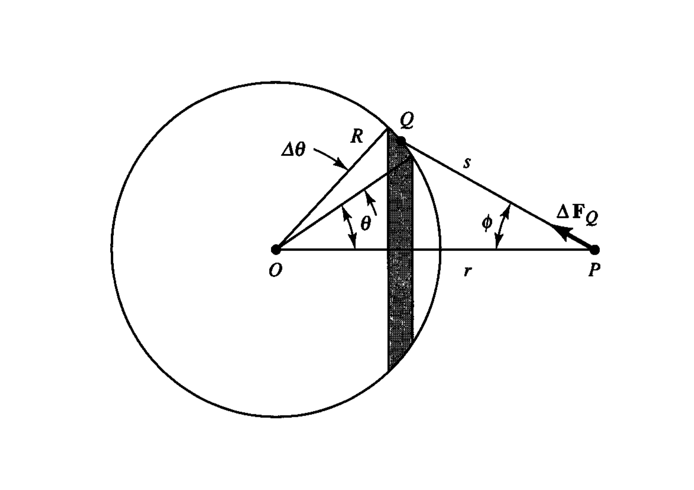
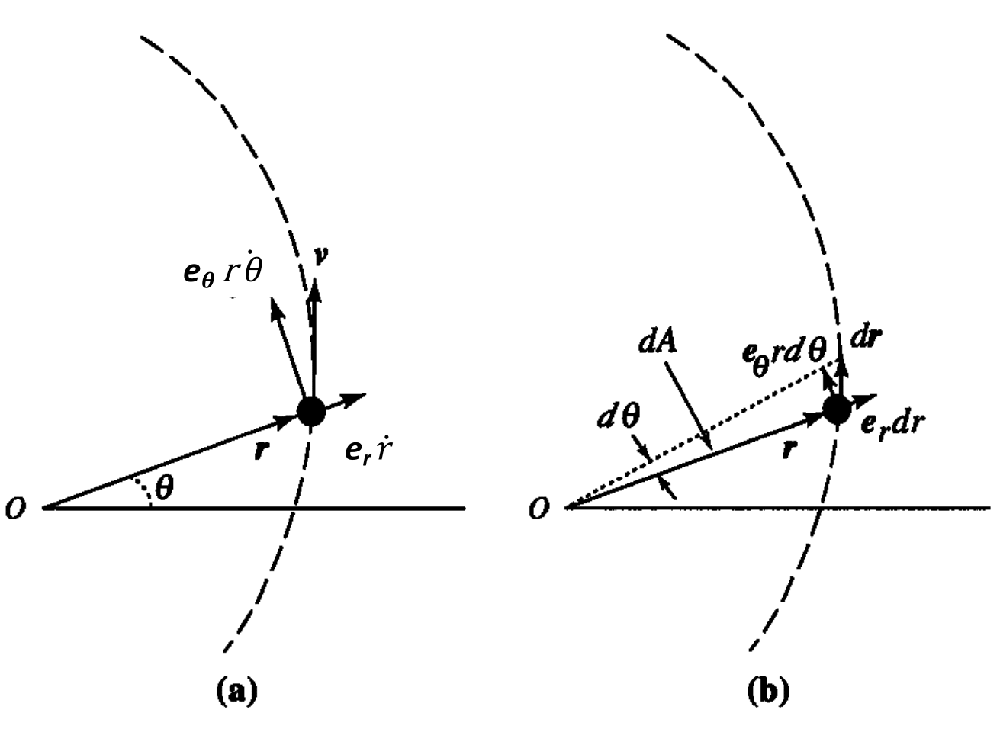
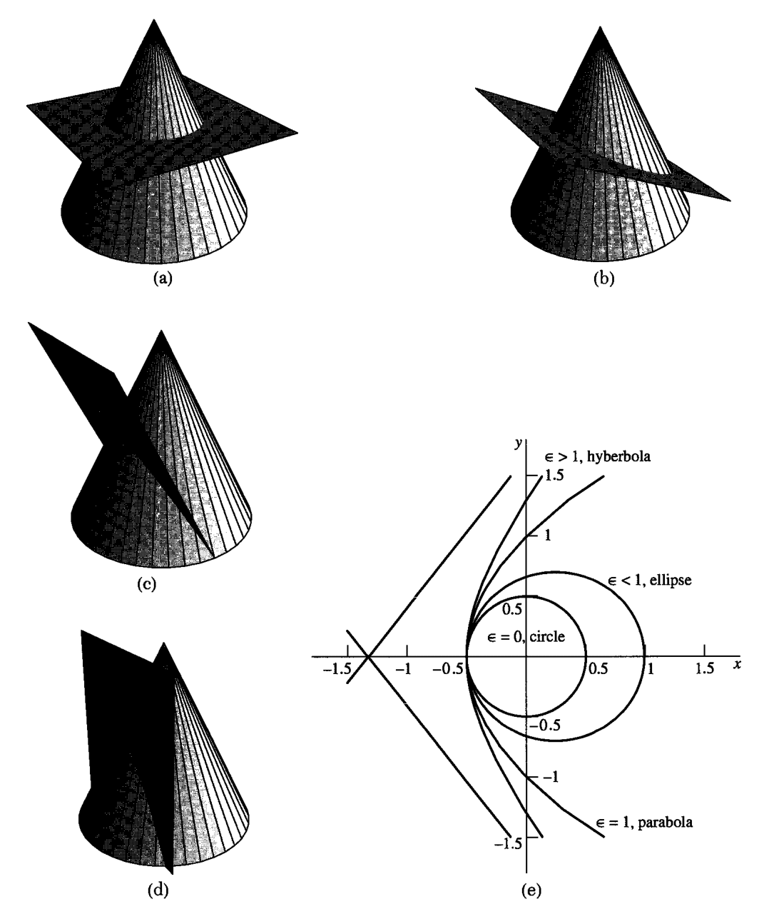
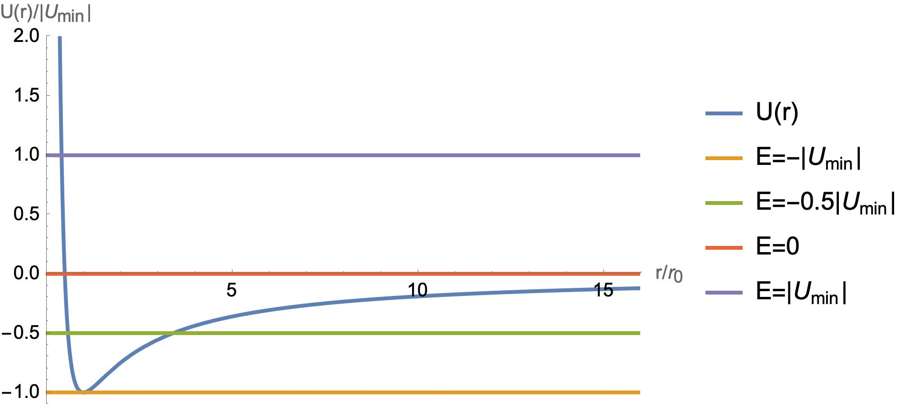

5. Gravitation and Central Forces#
5.1. Newton’s Law of Universal Gravitation#
Every particle in the universe attracts every other particle with a force whose magnitude is proportional to the product of the masses of the two particles and inversely proportional to the square of the distance between them. The direction of the force lies along the straight line connecting the two particles.
We can represent this statement mathematically by using vectors, as follows:
In equation (1), \(\vec{F}_{ij}\) is the attractive force on a point mass \(m_i\) due to another mass \(m_j\), which is situated at a distance \(r_{ij}\) from \(m_i\). The vector \(\vec{r}_{ij}\) is a vector running from the position of \(m_i\) to that of \(m_j\) (we can write \(\vec{r}_{ij} = \vec{r}_j - \vec{r}_i\)). In accordance with Newton’s law of action and reaction, we can see that \(\vec{F}_{ij} = -\vec{F}_{ji}\).
The value of \(G\), the universal constant of gravitation, is \((6.67259 \pm 0.00085) \times 10^{-11} \, \mathrm{N \cdot m^2 \cdot kg^2}\). Gravitational force is an example of a central force—these are forces whose lines of action emerge from, or terminate on, a single point or center. It is also an isotropic force, since its magnitude does not depend on the direction along which it acts. If we approximate the Earth as a body with perfect spherical symmetry, the gravitational force due to the Earth acting upon any mass \(m\) on its surface would be:
with \(M_E\) and \(R_E\) denoting the Earth’s mass and radius. According to Newton’s second law, this force must also be equal to \(m g\), where \(g\) is the acceleration upon the mass \(m\) due to gravity. Hence, \(g = \frac{G M_E}{R_E^2}\) is the acceleration due to the Earth’s gravitational force at its surface, and is independent of the mass of the body upon which it acts.
5.2. Gravitational Force between a Uniform Sphere and a Particle#
Consider a thin spherical shell of radius \(R\), as shown in Figure 1, which carries a uniform mass per unit area of \(\sigma\) (often known as surface mass density). Now let’s calculate the gravitational field due to the shell at some particle \(P\), of mass \(m\), which is situated outside the shell, at a distance \(r\) from its center. In a convenient set of coordinates, the \(z\)-axis can be chosen so that it contains both the center of the shell (which we choose to be the origin \(O\)) and the point \(P\).
 Diagram for calculating the gravitational field at a point \(P\) outside a thin spherical shell of uniform surface density.
To do the calculation, we divide the shell up into many rings, or circular strips, which are symmetrical about the \(z\)-axis and of infinitesimal thickness \(R \, \Delta \theta\), where \(\theta\) is the angle between the direction \(OP\) and the position of any element on a ring with respect to the origin. The radius of the rings is \(R \sin \theta\). Hence, any ring will have a surface area \(\Delta S = 2\pi R \sin \theta \, \Delta \theta\), and thus have a mass \(\Delta M = \sigma \, \Delta S\).
The Figure shows that any element \(Q\) of the ring will exert a force on \(P\) given by \(\vec{\Delta F}_Q\), which points from \(P\) to \(Q\). We can resolve this force into components parallel and perpendicular to the \(z\)-axis (i.e., the direction \(OP\)). From the symmetry of the problem, we see that as we travel around the ring, the sum of all the perpendicular components will add to zero, and only the parallel component is important. This component for any of the rings has a magnitude given by:
To add together the force due to all of the rings which make up the shell, it seems we have to integrate with respect to the variable angle \(\theta\), whose value varies between 0 and \(\pi\). We can make the calculation a little easier by firstly noting, from the geometry of the triangle in the figure, that \(s^2 = r^2 + R^2 - 2 r R \cos \theta\) (cosine rule for triangles). Noting that \(r\) and \(R\) are fixed values, but that \(s\) and \(\theta\) are variable, the differential of this expression gives:
Similarly, the angle \(\phi\) is related to the triangle’s side lengths according to:
We can now eliminate factors involving \(\theta\) and \(\phi\) from our expression for \(\Delta F_{\text{ring}}\) in equation (5):
We can now integrate this expression with respect to \(s\), whose value ranges between \(r - R\) and \(r + R\) in order to cover the sphere. We obtain:
Here, \(M_s\) is the mass of the sphere.
This is a very important result—it shows that the gravitational field due to the spherical shell, at any point outside that shell, is equivalent to the field produced by a point mass at the center of the sphere, containing all of the mass of the sphere. It is easy to see that this idea can be extended to any spherically symmetric body, whose density is a function of radial distance only. Such a body is essentially a superposition of many spherical shells, and so the same result holds true. Interestingly, the total force at any point inside the shell is zero, which can be proven with an analysis similar to that shown above.
5.3. Kepler’s Laws of Planetary Motion#
From a detailed analysis of planetary motions in our Solar System, Johannes Kepler (1571-1630) was able to deduce three important aspects of this motion. His laws also played an important role in Newton’s development of the law of gravitation. In this section, we’ll investigate how Kepler’s laws are a consequence of the planets being subject to a central force – namely, the gravitational force.
5.3.1. Angular Momentum and Kepler’s Second Law#
Kepler’s second law may be stated: A line drawn between the Sun and the planet sweeps out equal areas in equal times as the planet orbits the Sun. What underpins this behaviour is a constant of the motion known as the planet’s angular momentum. The mathematical definition of angular momentum is:
where \( \vec{r} \) is the position vector of the centre of the planet with respect to the centre of the Sun, and \( \vec{p} \) is the planet’s momentum (the usual product, \( m \vec{v} \), of its mass and velocity). To prove that the angular momentum \( \vec{L} \) stays constant during the motion of the planet under the gravitational influence of the Sun, we may investigate the derivative with respect to time:
Now the first term on the right-hand side is zero, since it involves the cross product of a vector with itself. The second term involves the cross product of \( \vec{r} \) and the acceleration \( \dot{\vec{v}} \). But according to Newton’s second law, the acceleration is proportional to the force acting on the body. The gravitational force of the Sun on the planet acts in the direction from the planet to the Sun, i.e. along the direction \( -\vec{r} \). Hence the second term in the equation above is also zero and \( \vec{L} \) is a constant of the motion as the planet orbits the Sun. Since \( \vec{L} \) is always perpendicular to the plane defined by the vectors \( \vec{r} \) and \( \vec{p} \), it follows that this plane remains fixed in its orientation and thus the problem of orbital motion, in our example, is essentially a two-dimensional problem.
Taking this idea further, let’s specify the position of the planet with two coordinates: its radial distance \( r \) from the Sun and the angle \( \theta \) made between its position vector and some convenient reference direction lying in the plane of its orbit about the Sun. This reference direction passes through the origin, which is chosen to be the Sun’s location (see Figure below). We can thus define the planet’s velocity as \( \vec{v} = \dot{r} \vec{e}_{r} + r \dot{\theta} \vec{e}_{\theta} \), where the vectors \( \vec{e}_j \) are appropriate unit vectors in the radial and meridional directions.
 Figure: Motion of a particle in a single plane. (a) Components of velocity; (b) Area swept out during an infinitesimal time increment. (from the book by Fowles and Cassiday)
Using this definition, the angular momentum magnitude becomes
Since \( |\vec{e}_r \times \vec{e}_{\theta}| = 1 \) (these unit vectors are always orthogonal),
Hence the conservation of angular momentum implies that \( \dot{\theta} \propto 1/r^2 \).
The angular momentum is also related to the rate of change of the area swept out by the position vector of the planet as it orbits. Figure below shows that in an infinitesimal time \( dt \), the area swept out is that of a triangle, and given by
Thus:
Since we know \( L \) is a constant of the motion, we conclude that so too (as Kepler’s observations showed) is the rate at which a planet’s position vector (with respect to the Sun) sweeps out area as it moves.
5.3.2. Kepler’s First Law and Orbital Geometry#
Kepler’s first law is a relationship between the size of a planet’s orbit and its orbital period. To derive this relationship, we will set up the equation of motion of an orbiting planet, of mass \( m \), and solve it. The equation itself may be written in the form:
This equation emphasises that the gravitational force experienced by the planet, due to the Sun, is collinear with the unit vector \( \vec{e}_r \), which points along the Sun-planet direction.
We can decompose this vector equation into its radial (\( r \)) and meridional (\( \theta \)) components by using the expressions from the Particle Dynamics unit for the corresponding components of the acceleration:
It is straightforward to show that the second equation implies
This condition is equivalent to the statement that the angular momentum is conserved. The quantity \( l = r^2 \dot{\theta} \) is equal to (see section \ref{sec:angmomkep}) the angular momentum per unit mass of the planet. This is often referred to as the specific angular momentum.
In order to investigate the shape of an orbital trajectory for a planet (or indeed any particle moving under the influence of a central force) it is convenient to work with the variable \( u = 1/r \). The variation in \( u \) as a function of \( \theta \) is what we are seeking to understand.
We note that we can transform \( \dot{r} \) in terms of \( u \) as follows:
The final step above makes use of the definition \( l = r^2 \dot{\theta} \).
Differentiating a second time to obtain an expression for \( \ddot{r} \), we get:
If we now substitute our expressions for \( \dot{r} \), \( \dot{\theta} \), and \( \ddot{r} \) into equation (eq:eomcompr), we obtain the following differential equation for \( u \) as a function of \( \theta \):
This equation allows us to determine the shape of an orbit (\( u(\theta) \)), given the nature of the force function \( f(r) \) (a function of radial distance only). Conversely, given the function \( u(\theta) \), one can, in principle, determine the force function \( f(r) \), which then gives insight as to the nature of the central force producing the given orbital trajectory.
Let’s now look for solutions of equation (eq:uorbit) corresponding to the orbit of a planet of mass \( m \) around the Sun of mass \( M \). We will assume that \( m \ll M \) so that the Sun stays fixed at the origin of our coordinate system (i.e.\ its position is unperturbed by the presence of any planet). For this case, the function \( f(r)= -k/r^2 \), where the constant \( k = GMm \). Our equation for the orbit then becomes:
Fortunately, we have encountered this type of differential equation already, in the unit on ‘Oscillations’. The general solution can be written:
where \( A \) and \( \theta_0 \) are constants. It follows that we can obtain \( r \) through:
Without loss of generality, we can adopt a convention where we set \( \theta_0 = 0 \) and thus define the direction \( \theta = 0 \) to correspond to the minimum value of \( r \). Hence:
Now, this solution \( r(\theta) \) for the orbital shape looks very much like the well-known formula that corresponds to the shapes known as conic sections. This formula can be written:
where \( \epsilon \) is a parameter known as the eccentricity, and the point of closest approach to the origin (minimum \( r \)) occurs at a distance \( a(1 - \epsilon) \).
The three broad classes of conic section / orbit shape can be classified according to the value of \( \epsilon \) as follows:
Ellipse (\( 0 \leq \epsilon < 1 \)): An elliptical shape can be formed by considering the general intersection of a plane and a cone (see Figure below). When the angle of tilt \( \xi \) between the plane and the cone axis lies in the interval \( (\beta, \pi/2) \), where \( \beta \) is the cone’s generating angle (angle between its axis and its slant height). For the special case where \( \epsilon = 0 \) (\( \xi = \pi/2 \)), the shape becomes a circle defined by \( r = a \), a figure of constant radial distance from the origin.
Parabola (\( \epsilon = 1 \)): In this case, to keep the product \( a(1 - \epsilon^2) \) finite as \( \epsilon \rightarrow 1 \), we require \( a \rightarrow \infty \). The angle between the intersecting plane and cone (Figure below) becomes equal to \( \beta \).
Hyperbola (\( \epsilon > 1 \)): Here, the angle of tilt between the intersecting plane and cone lies in the interval \( [0, \beta) \). Like the parabola, the hyperbola represents an open conic section with unbounded values of \( r \). The ellipse is a closed conic section.
 Figure: (a) Circle, \( \epsilon = 0 \); (b) Ellipse, \( 0 < \epsilon < 1 \); (c) Parabola, \( \epsilon = 1 \); (d) Hyperbola, \( \epsilon > 1 \); (e) Family of conic sections which describe orbits. (from the book by Fowles and Cassiday)
Equation (eq:conicsecn) shows that the points of closest approach and farthest distance on the elliptical orbit of a planet around the Sun, referred to as its perihelion and apohelion, occur when \( \theta = 0, \pi \) and thus \( r_{min} = a(1 - \epsilon) \), \( r_{max} = a(1 + \epsilon) \). The Earth’s moon, since it orbits the Earth, has a perigee and apogee during its orbital motion.
Generally speaking, the planets of the Solar System have small orbital eccentricities. The highest value is that of Mercury, for which \( \epsilon \approx 0.206 \). The Earth’s orbit is much closer to circular, having \( \epsilon \approx 0.017 \). For the Earth, \( r_{min} \approx 146 \, \text{million km} \) and \( r_{max} \approx 153 \, \text{million km} \). By contrast, Halley’s comet has a highly eccentric orbit, \( \epsilon \approx 0.967 \) with a perihelion of only \( r_{min} \approx 89 \, \text{million km} \) and an apohelion beyond the orbit of Neptune. Non-recurring comets are on parabolic or hyperbolic orbits.
5.3.3. Periodic Orbital Motion and Kepler’s Third Law#
Kepler’s third law relates the orbital period of a planet to its distance from the Sun. In this section, we will demonstrate how it can be derived using Newton’s laws of motion. We start with Kepler’s second law, as summarised by equation (1); the rate at which the position vector of the orbiting planet sweeps out area is proportional to its constant angular momentum:
Now if we integrate both sides of this equation over one full orbital period \( \tau \), the left-hand side will become the area enclosed by the planet’s elliptical orbit. This is equal to \( \pi a b \), where \( a \) and \( b \) are the lengths of the semi-major and semi-minor axes of the ellipse. The right-hand side will simply integrate, since it is a constant with time:
Since \( b = a\,\sqrt{1-\epsilon^2} \), where \( \epsilon \) is the eccentricity of the ellipse:
Squaring both sides:
where \( l \) is the angular momentum per unit mass, or specific angular momentum.
Now, by comparing equations (eq:rvsthetaorb) and (eq:conicsecn), we can make the identification \( a\,(1-\epsilon^2) = l^2/(GM) \). Thus we can replace a factor \( a\,(1-\epsilon^2) \) in the equation above with the constant \( l^2/(GM) \):
Thus the square of the orbital period for any planet or body orbiting the Sun (of mass \( M_{\odot} \)) is proportional to the cube of the semimajor axis length of its elliptical orbit. The equation above tells us that if we measure \( a \) in units of the astronomical unit or AU, where \( 1 \, \text{AU} \approx 1.5 \times 10^8 \, \text{km} \) is the Earth’s orbital semimajor axis, and we measure \( \tau \) in units of years (where one year is the Earth’s orbital period), the relation simplifies to
5.3.4. Gravitational Potential#
Consider a static body of mass \( M \) at the origin of a convenient coordinate system. This body exerts a gravitational force \( \vec{F} \), as we have studied, on another, moving particle of mass \( m \). We remind ourselves that:
where symbols have their usual meaning and the radial unit vector \( \vec{e}_r \) points from the origin towards the position of the mass \( m \).
Let’s now consider the work we need to do against the gravitational force in order to displace the mass \( m \) by a small vector displacement \( \vec{dr} \). If we don’t wish to accelerate the particle, we can apply a force \( -\vec{F} \) which is equal and opposite to the gravitational force. The corresponding increment of work done is thus:
Note that \( \vec{e}_r\cdot\vec{dr} = dr \), the amount by which the radial distance of the particle changes. Thus it is only the radial component of a larger, finite displacement which contributes to the work done. To verify this, let’s integrate both sides of the differential equation above between some initial and final vector positions:
This is an important result - it tells us that the work done is independent of the path taken between the initial and final positions of the particle. Stated another way, a central force which obeys the inverse square law is said to be a conservative force.
Let’s develop this further by introducing a physical definition of the gravitational potential energy of a test particle of mass \( m \) due to a stationary body of mass \( M \). We define this potential energy to be the work done in moving the particle from an infinite distance, where we take its potential energy to be zero, to a point with radial distance \( r \) from the origin (location of spherically symmetric mass \( M \)). Using the above relation, we obtain the following expression for potential energy \( V \) at the particle’s location at radial distance \( r \):
Note that for finite separation \( r \), the gravitational potential energy of our system of two masses is algebraically negative.
We can go on to generally define the gravitational potential \( \Phi \) as the potential energy per unit mass of a small test particle of mass \( m \) (in the presence of other masses) in the limit as \( m \) becomes vanishingly small. We define potential in this way to ensure that the presence of the mass \( m \) does not significantly change the total potential energy of the whole system. Hence:
and the potential due to a point mass \( M \), at a distance \( r \), is simply \( \Phi(r) = -GM/r \).
Now consider a collection of source point masses \( M_j \) placed at corresponding positions \( \vec{r}_j \). Since the gravitational force at any point in space is just the vector sum of the force due to the individual masses, it follows that the total potential is just given by the sum:
The force on a small test particle, of mass \( m \), at a given point in such a system is related to the gradient in the potential energy, according to \( {\vec{F}} = -\nabla V \). Similarly \( {\vec{g}} = -\nabla \Phi \), where \( \vec{F} = m\vec{g} \) – that is, \( \vec{g} \) has dimensions of acceleration.
Note that the action of the gradient operator on a scalar function takes a simple form in Cartesian coordinates:
We will encounter the formula for the same vector, \( \nabla f \), in different coordinate systems during the problem solving classes. By definition, the small increment in value of some function \( f(x,y,z) \) when moving from some initial position \( \vec{r} \) to some nearby position \( \vec{r} + \vec{dr} \) is given to a good approximation by \( df \approx (\nabla f)\cdot\vec{dr} \).
Note that if some field of force \( \vec{F}(\vec{r}) \) is conservative, it means that zero work is done in moving a test particle around a closed path in space. In other words:
From the previous unit on electromagnetic theory, we know that the integral on the left-hand side, through Stokes’ Theorem, is related to the surface integral of the curl of \( \vec{F} \) (usually written as \( \nabla \times \vec{F} \)). Thus it follows that if the spatial dependence of a field of force satisfies $ \nabla \times \vec{F}
5.3.5. Energy of Orbits in a Central Field#
Because a central force is conservative, the total potential-plus-kinetic energy \(T+V\) of a test particle will be conserved, according to:
where we once again use polar coordinates \(r\) and \(\theta\) to describe motion in a single plane containing the origin.
For a general central force, this equation can be written, using the auxiliary variable \(u = 1/r\), as:
where \(l\) again represents specific angular momentum.
For the specific case of a field of force which has an inverse-square dependence on distance, the potential energy is \(V(r) = -k/r = -ku\), with \(k\) an appropriate constant. Hence the energy equation becomes:
To see how orbital parameters relate to this energy \(E\), we can rearrange the above equality in order to relate increments along the orbit in \(\theta\) and in \(u\):
Now defining the constants \(a = -1\), \(b = \frac{2k}{ml^2}\), and \(c = \frac{2E}{ml^2}\), we can apply a standard integral identity:
Now let’s rearrange to get \(u\) in terms of \(\theta\) and the other parameters:
Finally, replacing \(u\) with \(1/r\) and re-inserting the constant definitions gives:
Now compare this to the equivalent orbital trajectory given by equations \(\ref{eq:conicsecn}\) and \(\ref{eq:uorbit}\) (as before we can set \(\theta_0 = 0\) to be the angle corresponding to the periapsis of the orbit). We observe that the eccentricity is given by:
We also note, from the numerator of equation \(\ref{eq:rvsthetaenergy}\), that we can identify:
This important relation tells us that for closed (elliptical) orbits, which will have algebraically negative energy \(E\), the semimajor axis \(a\) of the ellipse will be determined by that energy. More generally, the sign of the energy determines which type of eccentricity, and thus conic section, the orbital trajectory will follow:
\(E < 0\), \(\epsilon < 1\) (closed/bound orbit: elliptical/circular)
\(E = 0\), \(\epsilon = 1\) (parabolic orbit)
\(E > 0\), \(\epsilon > 1\) (hyperbolic orbit)
Since \(E = T + V\), closed orbits arise for the case \(T < |V|\), while open orbits arise when \(T \geq |V|\).
For the case of the Sun’s gravitational field of force, \(k = G M_{\odot} m\), and so
Hence for bound orbits about the Sun, \(v^2\) cannot equal or exceed the value \(2 G M_{\odot} / r\).
5.3.6. The Limits of Radial Motion#
Since the angular momentum of a particle moving under the influence of a central field of force is a constant of the motion, we can rewrite equation \(\ref{eq:energygen}\) as follows (using \(\dot{\theta} = l/r^2\)):
The grouping of the terms introduces the effective potential,
\(U(r) = V(r) + \frac{ml^2}{2r^2}\), which, in particular, contains the term \(\frac{ml^2}{2r^2}\), known as the centrifugal potential. Written in this way, the energy equation tells us that the radial motion of our particle can be described by a one-dimensional equation (i.e. depending only on the radial coordinate and its time derivative, which is the radial velocity).
As for the case of simple harmonic motion, we can explore the limiting values of radial distance by setting \(\dot{r} = 0\) in the energy equation, thus seeking solutions of:
A further constraint is provided by \(U(r) \leq E\), since \(\dot{r}^2\) is positive or zero.
If we use the central (gravitation-like) potential \(V(r) = -k/r\), then this condition becomes:
The solutions of this quadratic equation in \(r\) are:
For a bound orbit, \(E < 0\) and the two roots are both positive, representing the points of closest and furthest approach of the orbit (also known as periapsis and apoapsis, or pericentre and apocentre). In fact, the roots of the equation \(U(r) = E\) can be geometrically interpreted as the points of intersection between two lines in the coordinate plane defined by radial distance and energy (see Figure \(\ref{fig:effpotplots}\)).
 Figure: A plot of the radial distance dependence of the effective potential \(U\), along with some examples of total orbital energies. Axes are dimensionless, and scaled as indicated (see text).
As the figure shows, when \(E\) (a constant of the motion) takes on its minimum possible value, \(E_{\text{min}} = \frac{-k^2}{2 m l^2}\), there is just one point of intersection and just one solution to \(U(r) = E\), representing a circular orbit, for which radial distance remains at a single value. For the case \(E_{\text{min}} < E < 0\), there will be two points of intersection. This corresponds to a bound, elliptical orbit for which radial distance varies between a lower (periapsis) and upper (apoapsis) limit. Finally, for the case \(E \geq 0\), the orbit is open (parabolic or hyperbolic) and only one point of intersection is obtained (the single periapsis, with no accompanying apoapsis).
An important point we can note from our study of planetary orbits is that orbital parameters such as semimajor axis and eccentricity are independent of the mass of the orbiting planet (recall that we are assuming a stationary Sun, with the planet mass negligible by comparison).